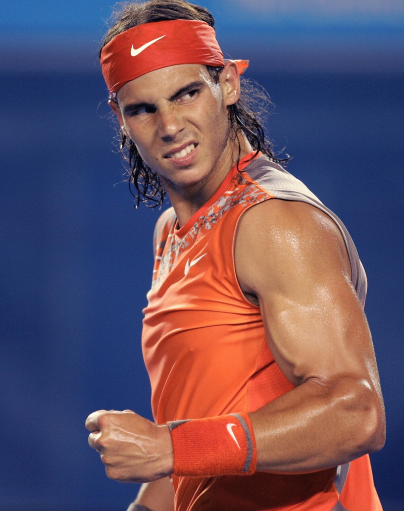

Rafael Nadal made his top 10 debut on this day 17 years ago and hasn’t left the elite since:
It’s already been a record-breaking year for Rafael Nadal—he won his 21st Grand Slam title at the Australian Open, breaking a three-way tie with Roger Federer and Novak Djokovic to set the new men’s record for most Grand Slam titles in tennis history.
And today, he reaches another historic milestone: Nadal has now been ranked in the Top 10 of the ATP rankings non-stop for 17 years.
He first broke into the Top 10 as an 18-year-old on April 25th, 2005, rising from No. 11 to No. 7 after winning the first of his now-12 career titles in Barcelona. And despite all of his injuries over the years—he’s missed two Australian Opens, three Wimbledons and four US Opens since then—he’s never left the Top 10, not even for a week.
